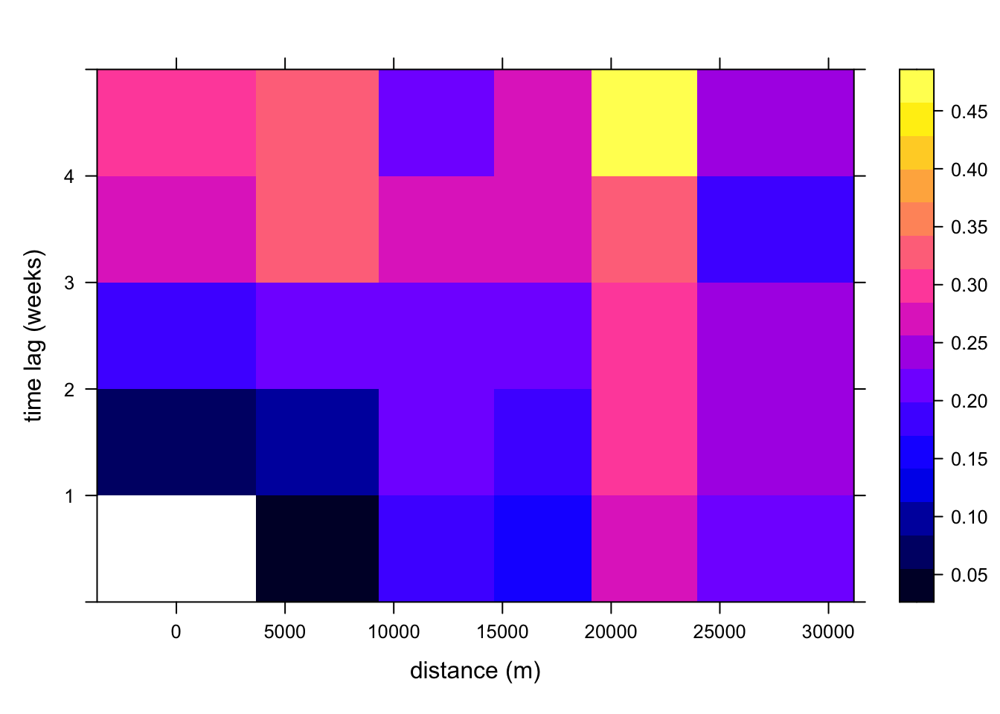

# import necessary libraries
library(pacman)
p_load(sp, spacetime, dplyr, gstat, lattice)Module 12: Spatiotemporal Semivariogram Vignette
1 Spatiotemporal Semivariograms Using R
- Spatiotemporal autocorrelation is common in real-world ecological data
- Ecological patterns are rarely random — close values in space/time tend to be similar.
- Why spatiotemporal variograms?
- They help us measure how similarity decreases with distance and time.
- Avoids bias in model estimates and is essential for accurate interpolation.
Better predictions lead to higher quality research and decision-making. Spatiotemporal autocorrelation modelling turns raw data into actionable insights for environmental/ecological policy!
Data For Vignette
Although I will be using simulated data for this r-code vignette (provided as a resource for this week), the continuous ecological variable (pika stress hormone concentration: concentration_pg_g) is based on the open-source dataset nwt_pikas from the lterdatasampler package in R. I have provided their website with this r-code demonstration and you can explore this dataset further by running the command data(nwt_pikas, package = "lterdatasampler") in R.
2 Resources
This R-code vignette is based on the following open-source resources on spatiotemporal variograms and spatiotemporal data analysis in R.
Spatio-temporal variography using
airsample data fromspacetime- https://cran.r-project.org/web/packages/gstat/vignettes/st.pdfTransforming data into a
STIDFobject - https://www.r-bloggers.com/2015/08/spatio-temporal-kriging-in-r/More on
STIDFobjects, and a whole chapter on Spatio-Temporal analysis in R more broadly - https://gdsl-ul.github.io/san/10-st_analysis.htmlApplied geostatistics exerpt on Spatio-temporal geostatistics - in addition to semivariograms, also covers kriging and temporal autocorrelation! I also used this resource to format the LaTex equations for the semivariance functions! https://www.css.cornell.edu/faculty/dgr2/_static/files/R_PDF/exC.pdf
Another ecological study comparing different semivariogram structures - https://doi.org/10.1111/tgis.12596
3 Preparing Dataset
gstatrequiresSTIDForSTFDFfor spatiotemporal modeling (from thespacetimepackage)STFDF- full grid (every station x every time step) - rare in ecological dataSTIDF- irregular grid - more realistic for field observations
STIDFobject:SpatialPointsobject (coordinates)- Time vector (
POSIXct) - Data frame (e.g.,
concentration_pg_g)
3.1 Import libraries
3.2 Simulated Dataset
# setting seed for reproducibility
set.seed(41)
# 10 stations with UTM coords
pikas_stations <- data.frame(
# identifiers of stations
station = paste0("S", 1:10),
# x coordinates (easting)
x = runif(10, 500000, 550000),
# y coordinates (northing)
y = runif(10, 4400000, 4500000)
)3.3 12 Weekly time points (May-July 2018)
# simulating 5 weekly dates
pikas_dates <- seq(as.Date("2018-05-01"), by = "1 week", length.out = 5)3.4 Long-format grid of station x time
# binding spatial and temporal components into a grid
pikas_grid <- expand.grid(station = pikas_stations$station, date = pikas_dates)
pikas_grid_id <- left_join(pikas_grid, pikas_stations, by = "station")3.5 Adds spatial and temporal trends to simulate autocorrelation
# adding temporal and spatial trends
pikas_grid_trend <- pikas_grid_id %>%
mutate(
# normalized trends
space_trend = sqrt((x - min(x))^2 + (y - min(y))^2),
space_trend_scaled = space_trend / max(space_trend),
# adding random noise
space_trend_scaled = space_trend_scaled + rnorm(n(), 0, 0.1),
time_trend = as.numeric(difftime(date, min(date), units = "weeks")) + rnorm(n(), 0, 0.5),
time_trend_scaled = time_trend / max(time_trend),
# stress concentration levels showing spatiotemporal autocorrelation
concentration_pg_g = 1900 +
1600 * space_trend_scaled^2 +
1000 * time_trend_scaled^2 +
20 * (space_trend_scaled * time_trend_scaled) +
# adding random noise
rnorm(n(), 0, 20)
)3.6 Final Steps
3.6.1 Convert station coordinates to SpatialPoints object
# convert to spatial object
coordinates(pikas_grid_trend) <- ~x + y
proj4string(pikas_grid_trend) <- CRS("+proj=utm +zone=13 +datum=WGS84")3.6.2 Convert temporal object to POSIXct
# convert to date object
pikas_grid_trend$date <- as.POSIXct(pikas_grid_trend$date)3.6.3 Extract spatial, temporal and data components
# create components
# sp object
pikas_sp <- SpatialPoints(pikas_grid_trend@coords, proj4string = CRS("+proj=utm +zone=13 +datum=WGS84"))
# temporal vectors object
pikas_tm <- pikas_grid_trend$date
# df of only the outcome variable
pikas_df <- data.frame(concentration_pg_g = pikas_grid_trend$concentration_pg_g)3.6.4 Combine using STIDF(sp, time, data)
# create STIDF
pikas_stobj <- STIDF(pikas_sp, pikas_tm, pikas_df)
# stress concentration levels pg/g divided by 1000 (nanograms)
pikas_stobj@data$concentration_pg_g <- (pikas_stobj@data$concentration_pg_g)/10004 Computing Empirical Spatiotemporal Variogram
# variogram of raw variable
pikas_vv <- variogramST(
concentration_pg_g ~ 1,
# STIDF data to use
data = pikas_stobj,
#spatial bins
width=5000,
# time lags
tlags = 0:5,
# time vector
tunit = "weeks",
# omit missing values
na.omit = T
)4.1 Plotting variogram in 2D and 3D
# loading in sample variogram
load("pikas_vv.rda")
#2d variogram
plot(pikas_vv, map = T) 
#3d variogram
plot(pikas_vv, wireframe = T)- 2D Variogram plot (lag map)
- x-axis: spatial lag in meters
- y-axis: temporal lag in weeks
- color: semivariance
- lower (darker) values: strong autocorrelation
- 3D Variogram plot (surface)
- x-axis: spatial lag, y-axis: temporal lag
- z-axis: semivariance (height)
Note
wireframe in lattice package: https://stat.ethz.ch/R-manual/R-devel/library/lattice/html/cloud.html
# formatting 3D plots using lattice package
wireframe(
# formula and data
gamma ~ spacelag * timelag,
data = as.data.frame(pikas_vv),
# color specifies semivariance
drape = T,
colorkey = T,
# visual formatting and angles
screen = list(z = 60, x = -60),
par.settings = list(
regions = list(col = heat.colors(100)),
axis.line = list(col = "transparent")
),
# plot labels
xlab = "Spatial Lag (m)",
ylab = "Temporal Lag (weeks)",
zlab = "Semivariance",
main = "Empirical Spatiotemporal Variogram Surface"
)
library(plotly)
library(tidyverse)
# plotly needs a complete rectangular matrix for the 3D variogram
pikas_plotly <- as.data.frame(pikas_vv) %>%
select(spacelag, timelag, gamma) %>%
pivot_wider(names_from = spacelag, values_from = gamma)
# semivariance matrix
z_pikas <- as.matrix(pikas_plotly[,-1])
# temporal and spatial data separately
y_pikas <- pikas_plotly$timelag
x_pikas <- as.numeric(colnames(pikas_plotly))
plot_ly(
x = x_pikas,
y = y_pikas,
z = z_pikas,
# 3D surface variogram
type = "surface",
colorscale = "Viridis",
# presents information for each combination lag
hoverinfo = "x+y+z"
) %>%
# labs
layout(
title = "Spatiotemporal Variogram Surface",
scene = list(
xaxis = list(title = "Spatial Lag (m)"),
yaxis = list(title = "Temporal Lag (weeks)"),
zaxis = list(title = "Semivariance")
)
)5 Fitting Spatiotemporal Variogram Models
5.1 Separable - simple, stable, no interaction term
5.1.0.0.1 Separable Semivariance Function
\(\gamma(h, u) = \gamma_s(h) + \gamma_t(u) - \gamma_s(h)\gamma_t(u)\)
# separable model
model_sep <- vgmST("separable",
space = vgm(1, "Exp", 5000, 0.1),
time = vgm(1, "Exp", 2, 0.1), sill = 1)
fit_sep <- fit.StVariogram(pikas_vv, model_sep, method = "L-BFGS-B")
sep_rmse <- attr(fit_sep, "optim")$value5.2 Metric - single spatiotemporal distance
5.2.0.0.1 Metric Semivariance Function
\(\gamma(h, u) = \gamma_{st}\left( \sqrt{h^2 + (\alpha u)^2} \right)\)
# metric models
model_metric <- vgmST("metric",
joint = vgm(1, "Exp", 5000, 0.1),
stAni =1000)
fit_metric <- fit.StVariogram(pikas_vv, model_metric)
met_rmse <- attr(fit_metric, "optim")$value5.3 Product Sum - space, time and a cross term
5.3.0.0.1 productSum Semivariance Function
\(\gamma(h, u) = \gamma_s(h) + \gamma_t(u) + k \cdot \gamma_s(h)\gamma_t(u)\)
# product sum model
model_prod <- vgmST("productSum",
space = vgm(1, "Exp", 5000, 0.1),
time = vgm(1, "Exp", 2, 0.1),
k = 0.5)
fit_prod <- fit.StVariogram(pikas_vv, model_prod)
prod_rmse <- attr(fit_prod, "optim")$value5.4 sumMetric - space, time and joint functions
5.4.0.0.1 sumMetric Semivariance Function
\(\gamma(h, u) = \gamma_s(h) + \gamma_t(u) + \gamma_{st}\left( \sqrt{h^2 + (\alpha u)^2} \right)\)
# sum metric model
model_sumMetric <- vgmST("sumMetric",
space = vgm(1, "Exp", 5000, 0.1),
time = vgm(1, "Exp", 2, 0.1),
joint = vgm(1, "Exp", 5000, 0.1),
stAni = 1000)
fit_sumMetric <- fit.StVariogram(pikas_vv, model_sumMetric)
summ_rmse <- attr(fit_sumMetric, "optim")$value5.5 simpleSumMetric - simplified sumMetric
5.5.0.0.1 simpleSumMetric Semivariance Function
\(\gamma(h, u) = \gamma_s(h) + \gamma_t(u) + \gamma\left( \sqrt{h^2 + (\alpha u)^2} \right)\)
# simple sum metric model
model_simple <- vgmST("simpleSumMetric",
space = vgm(1, "Exp", 5000, 0.1),
time = vgm(1, "Exp", 2, 0.1),
joint = vgm(1, "Exp", 5000, 0.1),
nugget = 0.05,
stAni = 1000)
fit_simple <- fit.StVariogram(pikas_vv, model_simple)
sim_rmse <- attr(fit_simple, "optim")$value6 Comparing different variograms
# plotting 3D plots side by side
plot(pikas_vv, list(fit_sep, fit_metric, fit_prod, fit_sumMetric, fit_simple),
full = TRUE,
wireframe = T, zlim = c(0, 0.3),
zlab = NULL, xlab = list("distance (m)", rot = c(30, 0), cex = 0.9),
ylab = list("time lag (weeks)", rot = c(-30, 0), cex = 0.9),
scales = list(
arrows = FALSE,
x = list(distance = 1, cex = 0.7),
y = list(distance = 1, cex = 0.7),
z = list(distance = 3, cex = 0.7)
))6.0.1 Model Results
| Variogram Model | RMSE |
|---|---|
| Separable | 0.0052459 |
| Metric | 0.0060165 |
| Product Sum | 0.0040033 |
| Sum Metric | 0.0037811 |
| Simple Sum Metric | 0.003781 |